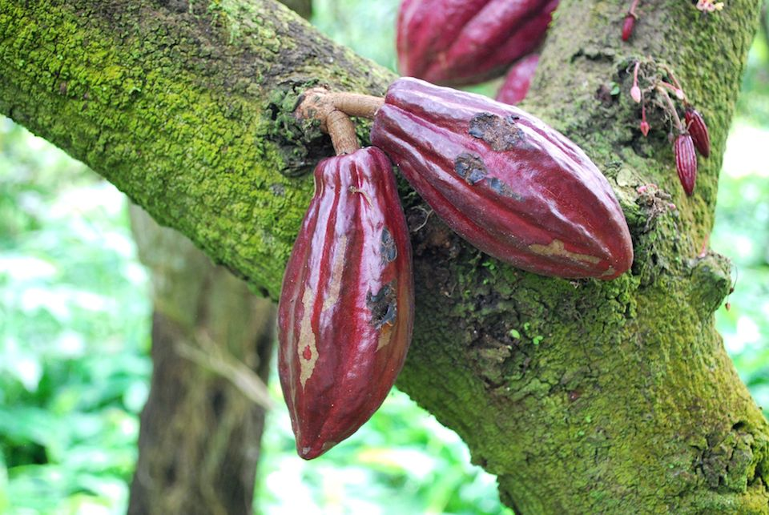
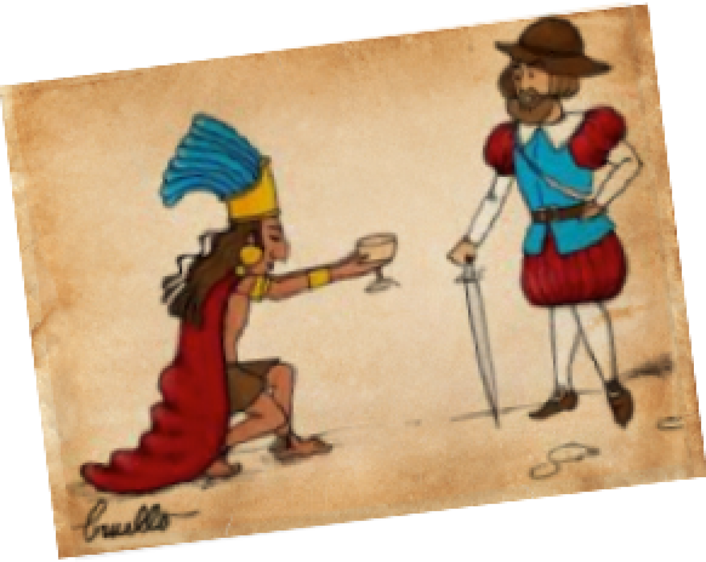

Entra y revisa algunas de las cosas que hago
Receta del dia
Colita de cuadril rellena, una receta difícil de superar

La colita de cuadril, también conocida como picanha, punta de cadera, punta trasera, punta de Picana, anca o tapa de cuadril (que se note el éxito que tuvo a nivel internacional) se trata de un corte de carne argentino muy clásico, sin hueso, muy rico, tierno y grande. Al no tener hueso se convierte en una opción muy rendidora, a la familia numerosa le gusta esto. No tiene mucha grasa y agradecemos esta parte porque nos deja aprovecharlo al máximo.
y el dato de la semana
sabias el origen del chocolate??
El chocolate tiene su origen en México, donde el dios Quetzalcoatl regaló, según cuenta la leyenda, el árbol de cacao a los hombres, que años después se bautizaría con el nombre científico Theobroma Cacao, que significa en griego “alimento de los dioses”.

El cacao fue alimento de gran importancia en la sociedad azteca y también fue utilizado como moneda de cambio. Lo tomaban líquido y mezclado con especias. El resultado era una bebida muy energética, oscura, espesa y espumosa a la que llamaban "tchocolatl", nombre que poco difiere de nuestro "chocolate".
